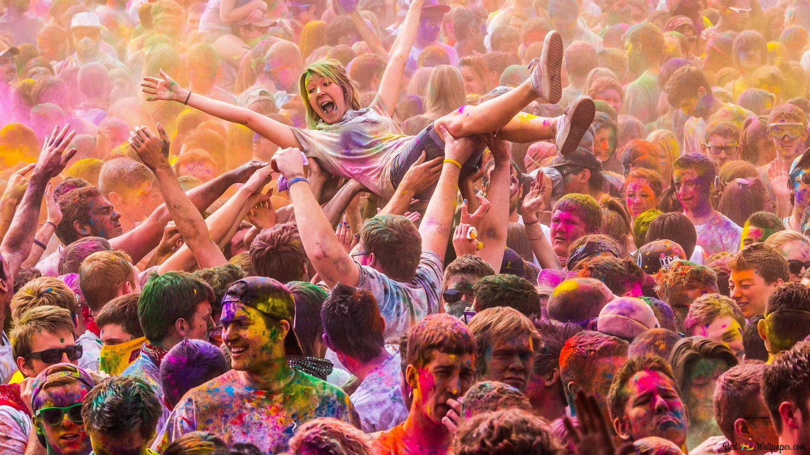
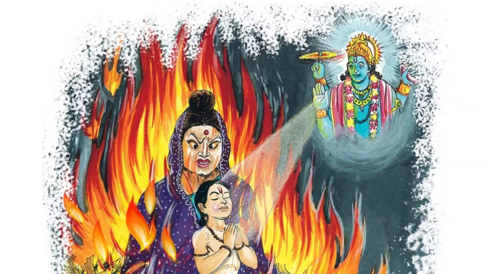
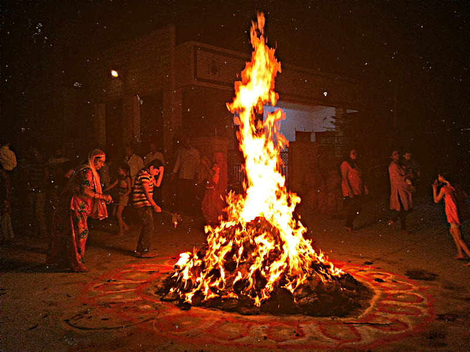
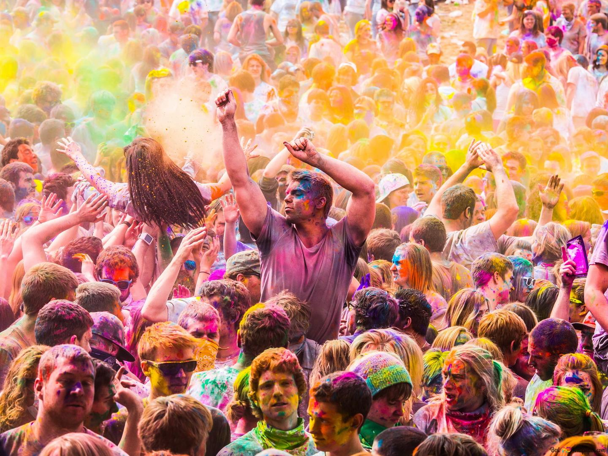
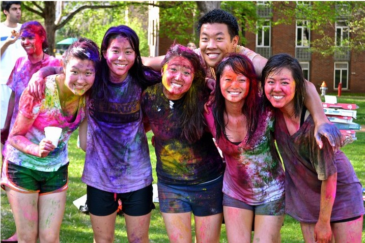
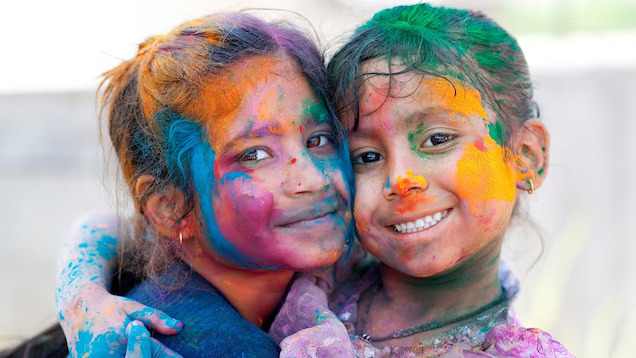

Slide 1: Introduction
Holi - the Festival of Colors
Holi is one of the most popular festivals celebrated in India, Nepal, and other parts of the world. It is also known as the festival of colors, as people celebrate by throwing vibrant colored powder and water at each other. Holi is celebrated on the full moon day in the Hindu month of Phalguna, which falls in February or March according to the Gregorian calendar.
Slide 2: Origins of Holi
The Story Behind Holi
Holi has its roots in Hindu mythology and is associated with several legends. One of the most popular stories behind the festival is the legend of Prahlada and Holika. According to the legend, Prahlada was a devotee of Lord Vishnu and was saved by the god from his evil father Hiranyakashipu. Hiranyakashipu's sister, Holika, who had a boon of being immune to fire, tried to kill Prahlada by sitting with him in a pyre. However, due to the blessings of Lord Vishnu, Holika was burnt to ashes, and Prahlada survived. This event is celebrated as Holi, where the triumph of good over evil is commemorated.
Slide 3: Significance of Holi
The Importance of Holi
Holi is a festival that signifies the arrival of spring and the victory of good over evil. It is a time when people forget their differences and come together to celebrate. Holi is also a festival that promotes unity and brotherhood among people. It is a time to forgive and forget, as people smear colored powder on each other and exchange sweets and greetings. Holi is a symbol of joy, love, and happiness.
Slide 4: Celebrations of Holi
How Holi is Celebrated
Holi is celebrated with great fervor and enthusiasm. People start preparing for the festival weeks in advance. On the day of Holi, people gather in groups and throw colored powder and water at each other. They also dance to the beat of dhol and sing traditional songs. Bonfires are lit the night before Holi to commemorate the legend of Prahlada and Holika.
Slide 5: Traditional Food of Holi
Title: The Mouth-watering Delicacies of Holi

Holi is also a time when people indulge in traditional delicacies. Some of the popular Holi foods include gujiya, a sweet dumpling filled with khoya and nuts, mathri, a savory snack made with flour and spices, dahi bhalla, fried lentil balls served with yogurt and chutney, and thandai, a sweet and spicy milk-based drink infused with nuts and spices.
Slide 6: Holi in China
Title: Holi Celebrations in China
Holi is not just celebrated in India and Nepal, but also in other parts of the world. In China, Holi is known as the "Colorful Festival" and is celebrated by the Yi ethnic minority community. The festival is celebrated on the 15th day of the third lunar month and is marked by singing, dancing, and the throwing of colored powder.
Slide 7: Conclusion
Title: The Spirit of Holi
Holi is a festival that celebrates the triumph of good over evil, the arrival of spring, and the spirit of unity and brotherhood. It is a time to forget one's differences and come together to celebrate. Holi is a festival that brings joy, love, and happiness to people's lives. As the saying goes, "Bura na mano Holi hai," which means "Don't mind, it's Holi." It is a time to forgive, forget, and spread love and happiness.